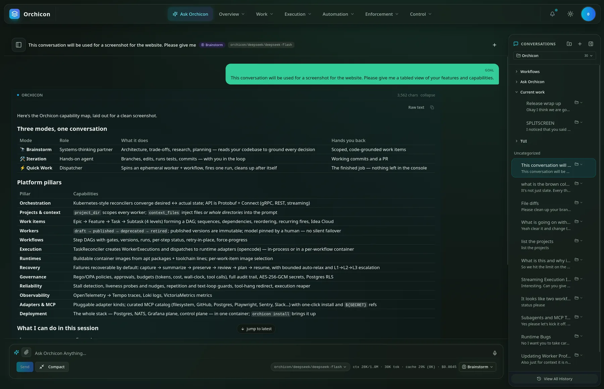
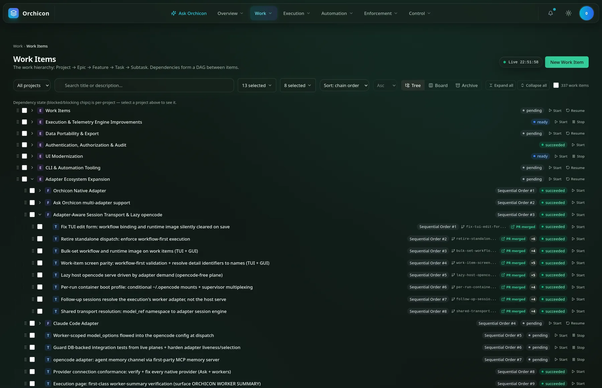
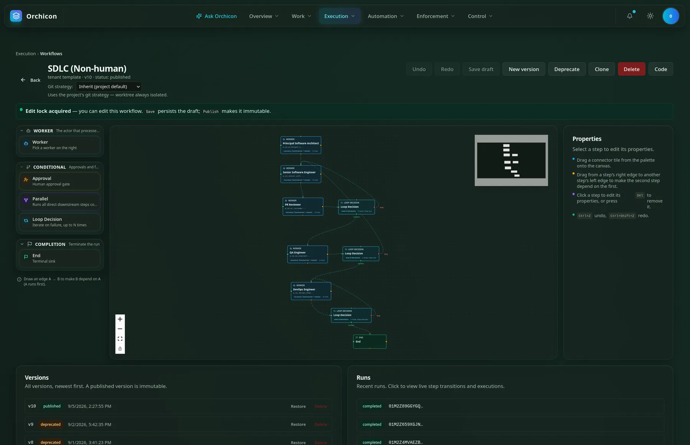
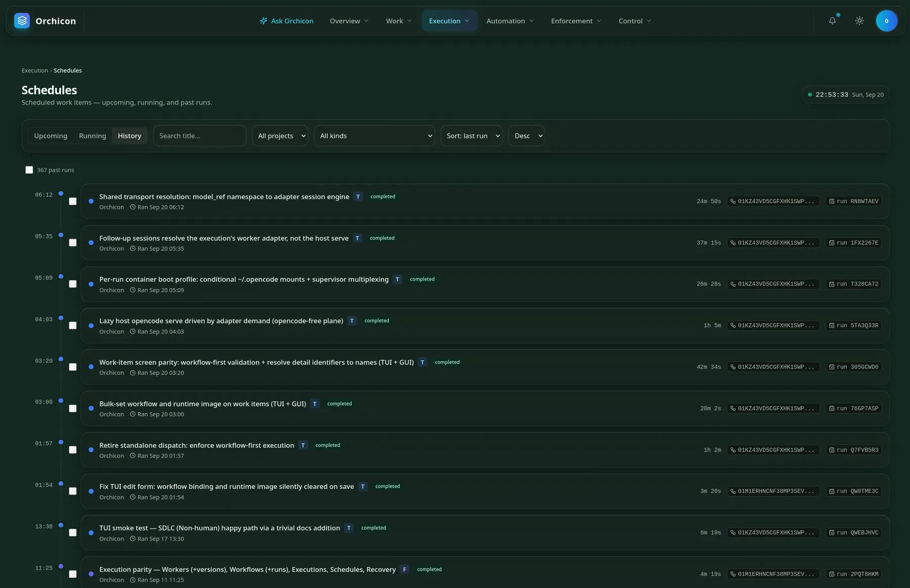
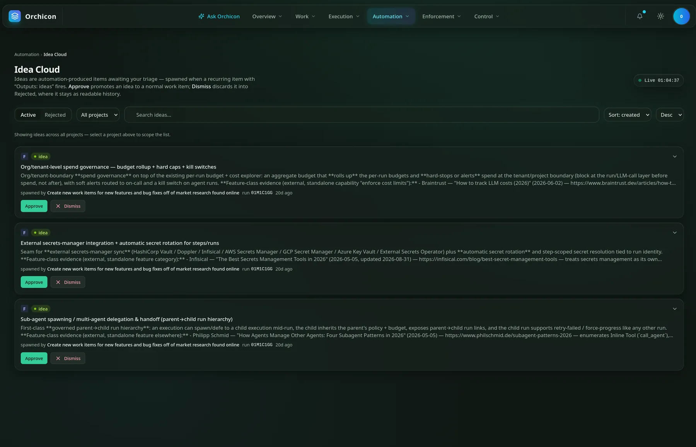
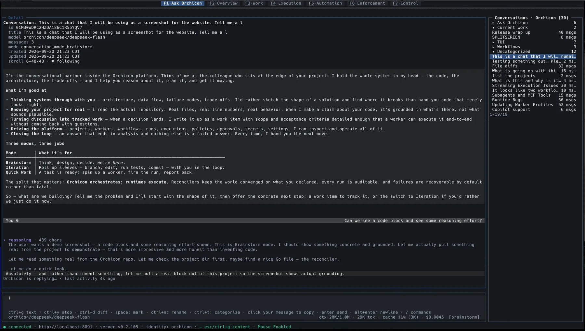
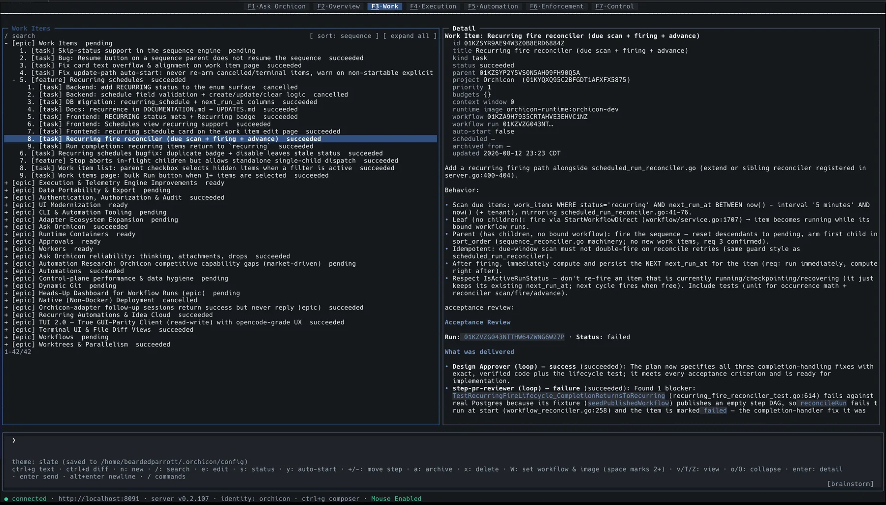
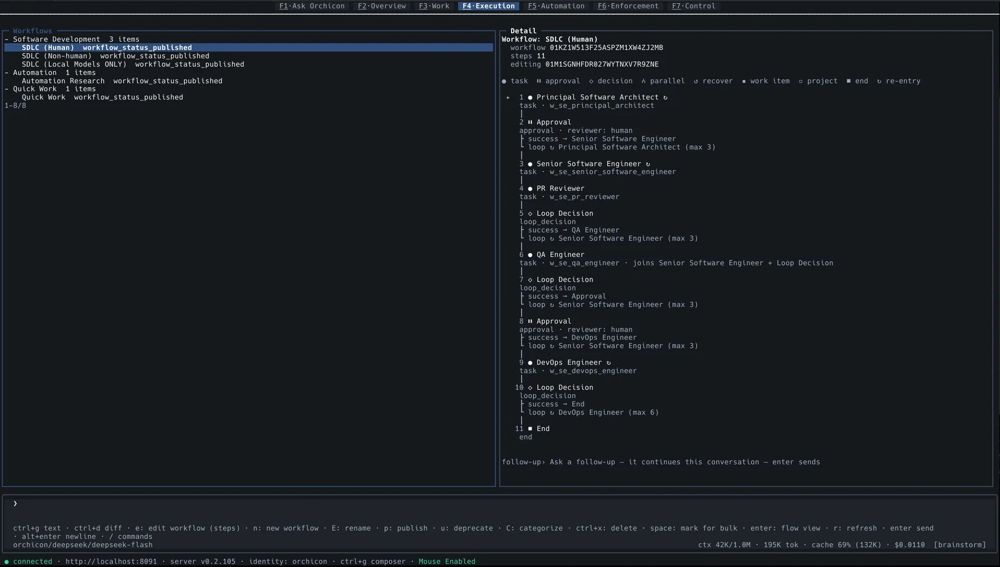
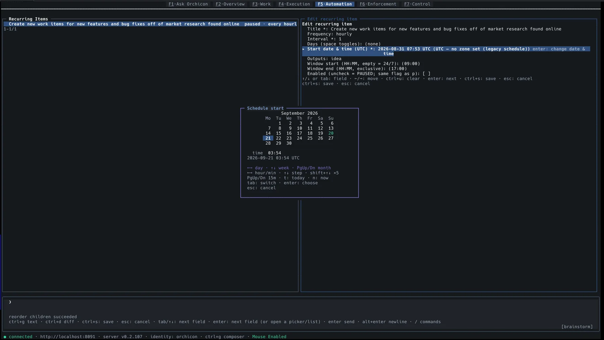

Agents chat. Workers ship.
Orchicon is a self-hosted control plane for autonomous AI work. It keeps the backlog, assigns each task to a team of AI Workers, runs them through review loops and human approvals, holds them to a budget, and picks up where they left off when something breaks.
Prefer a classic harness? Orchicon works like any other one too. Open Ask Orchicon in Iteration mode and pair with it directly in your repo, from the browser or the terminal. Add workflows, budgets and schedules only when you need them.
One command installs the whole stack: control plane, web app, terminal client, Postgres, NATS and a Grafana telemetry plane.
curl -fsSL https://orchicon.dev/install | bash
Two full clients, one product: work in the web app or run orch in your terminal.
The whole product, in your browser
The web app ships inside the control plane binary, so there is nothing extra to host. Plan with Ask Orchicon, shape the backlog, draw workflows, and watch every run land, with the same data and the same permissions as the terminal client.





Seven menus, same seven workspaces
The top bar mirrors the terminal's function keys, so moving between the two costs nothing.
| Ask Orchicon | Conversations in folders, with attachments, voice input and one-click compaction. |
|---|---|
| Work | Tree, board and archive views, drag-to-reorder, filters and bulk start. |
| Execution | Workflow editor, runs, executions and schedules with live step transitions. |
| Automation | Recurring items and the Idea Cloud triage board. |
| Overview, Enforcement, Control | Status at a glance, policies and approvals, settings and secrets. |
What the browser is best at
- Drawing workflows. Drag steps from a palette, connect them edge to edge, undo, and publish a locked version.
- Seeing the whole backlog. Hundreds of items with branches, merged PRs and sequence order in one scroll.
- Reading long answers. Rendered tables and code, collapsible replies, raw-text copy and jump to latest.
- Staying live. Live clocks, notifications and status that update as Workers move.
The whole product, in your terminal
orch is not a companion viewer. It is a full client with read and write parity: create, edit, publish, approve, cancel, retry and watch Workers stream live without reaching for the mouse. Run it on your laptop, over SSH, or in a tmux pane beside your editor.




Seven workspaces, one key each
| F1 Ask Orchicon | Conversations in all three modes, with reasoning, diffs and live cost. |
|---|---|
| F2 Overview | Projects, runs and Workers at a glance. |
| F3 Work | The work item tree: create, sequence, set status, bulk-bind workflows. |
| F4 Execution | Workflows, runs and executions, with a flow view of every step. |
| F5 Automation | Recurring items, schedules and the Idea Cloud. |
| F6 Enforcement | Policies, approvals and budgets. |
| F7 Control | Settings, secrets and platform administration. |
Keys you will use all day
- /
- Slash commands and the command palette
- ctrld
- Slide out the file diff sidebar
- ctrlg
- Jump between the composer and the content
- space
- Mark items for a bulk action
- W
- Set workflow and runtime image on every marked item
- enter
- Open details, or the flow view of a workflow
- ctrly
- Stop a reply mid-stream
- altenter
- New line in the multi-line composer
- 43 themes, including true transparency where your terminal shows through and text adapts to stay readable.
- Mouse when you want it. Click to select, scroll, and click your own message to copy it.
- Always honest about cost. Context, tokens, cache hit rate and dollars sit under the composer as you type.
An agent waits for a prompt. A Worker shows up with a job.
Agents are good at a single task in a single session, as long as someone is there to steer. A Worker has a role, a scope, tools it is allowed to use, a budget, and a process it answers to. The hard part is everything around the task: deciding what to build, checking the result, keeping costs sane, and not losing a day of work when a run falls over. That is the part Orchicon does.
| An agent on its own | Workers under Orchicon | |
|---|---|---|
| Where work comes from | Whatever you type into the prompt today. | A backlog of epics, features, tasks and subtasks with dependencies, run order and recurring schedules. |
| How it gets done | One model, one pass, one opinion. | A workflow of specialised Workers (architect, engineer, reviewer, QA, DevOps) with review loops and human approval gates. |
| Quality control | You read the diff and hope. | Reviewers can send work back, capped at a set number of loops. Every item gets an acceptance review recorded against the run. |
| When it fails | You notice, then start over. | Recovery captures, summarises, preserves, reviews, plans and resumes, escalating from L1 to L3 if it has to. |
| Cost | You find out on the invoice. | Hard ceilings on tokens, dollars, wall-clock time and tool calls, rolled up by tenant, project, task and execution. |
| Safety | The prompt asks it nicely not to. | Disallowed tools are withheld and refused at execution. Every dispatch passes a Rego policy with a full decision trace. |
| Isolation | Runs in your working copy. | Each run gets its own container and git worktree, reset to pristine afterwards. Nothing leaks between runs. |
| Visibility | Terminal scrollback. | Traces, logs and metrics in Grafana, an audit trail of every action, and a searchable history of every run. |
From an idea to a merged pull request
This is the loop Orchicon was built around, and the one it uses to build itself. It is also the logo: six steps, and the last one lands. The work items and schedules in these screenshots are Orchicon's own backlog.
- 1
Talk it through
Brainstorm with Ask Orchicon. It reads your actual repository, so the plan is grounded in real files and line numbers.
- 2
Turn it into work
When a decision lands, it becomes a work item with scope and acceptance criteria detailed enough for a Worker to finish without coming back with questions.
- 3
Bind a workflow
Choose how it gets built: a full SDLC team with or without human gates, a local-models-only team, or a single quick job. Bind a whole selection in one gesture.
- 4
Dispatch safely
Reconcilers check policy and budgets, pull a warm container, check out a worktree and start the first Worker. No cold starts.
- 5
Review, loop, approve
Reviewers and QA send work back until it passes. You approve at the gates you chose. Every step transition streams live.
- 6
Land it
The branch is pushed, the PR is merged, and the acceptance review is saved on the work item. The next item in sequence starts on its own.
Workflows: design the team that builds each task
A workflow is a graph of Workers, approval gates and loop decisions. Reviewers can send work back a set number of times, humans step in only where you ask them to, and every published version is locked so a run always knows exactly which process it followed.
Prefer no humans in the loop? The SDLC (Non-human) variant drops both gates. Workflows are versioned, and a published version is immutable.
orch.Ask Orchicon: three modes, enforced by the platform
Ask Orchicon is the colleague who holds the whole system in their head. Its modes are not prompt suggestions. A mode's disallowed tools are withheld from the model and refused at execution, so Brainstorm cannot be talked into editing your files. The rule is adapter-agnostic, so every new runtime inherits it.
Iteration is also how you use Orchicon like a regular harness: one Worker, your repo, you in the loop, with nothing else to set up.
| Mode | What it does | What you get back |
|---|---|---|
| Brainstorm | Architecture, trade-offs, research and planning, grounded in your codebase. Read-only. | Scoped work items with acceptance criteria |
| Iteration | Branches, edits, runs tests and commits with you in the loop. | Working commits and a pull request |
| Quick Work | Spins up a temporary Worker and workflow, fires one run, cleans up after itself. | The finished job, with nothing left behind |
Autonomous market research from a scheduled Worker
A recurring Worker scans the market on a schedule, checks what it finds against real sources, and files evidence-backed feature ideas into the Idea Cloud. You spend five minutes triaging instead of an afternoon researching.
- 1Schedule itA recurring item with Outputs: ideas fires on your interval, inside your work window.
- 2Research itA research Worker surveys competitors, articles and releases, then verifies each claim.
- 3File itEach idea lands with its sources, its reasoning and the run that produced it.
- 4Triage itApprove turns it into a real work item. Dismiss sends it to Rejected, kept as history so it never resurfaces.
Ideas you can check, not vibes
- Cited. Every idea quotes its outside evidence with dates and links, so you can verify it in a click.
- Traceable. Each one names the recurring item and run that spawned it.
- Kept apart. Ideas live on their own board until you approve them, so your backlog stays yours.
- Remembered. Rejected ideas stay readable and are never proposed again.
The three ideas in the screenshot came from a single run of Orchicon researching its own market.
Budgets: cost is a constraint, not a report
Every execution runs under ceilings with defaults calibrated from real usage. When a session gets expensive, Orchicon trims its own context and keeps working instead of re-sending an ever-growing history. Cache re-reads do not count as work, so a long task cannot trip its budget by re-reading what it already knows.
Everything a crew of Workers needs
Orchicon owns the parts that make autonomous work dependable and leaves the actual execution to a runtime you choose.
| Area | What you get |
|---|---|
| Work items | Epic, Feature, Task and Subtask form a dependency graph with cycle detection. Sequences, reordering, bulk actions, board and tree views, archive, and recurring fires. |
| Workers | Versioned definitions with system prompt, permissions, gated tools and budgets. Lifecycle runs draft, published, deprecated, retired. The model is pinned by a human, with no silent failover. |
| Workflows | Step graphs with task, approval, decision, parallel, loop and recover steps. Visual editor, edit locks, immutable versions, retry-in-place and force-progress. |
| Projects & context | project_dir scopes every Worker to a repo. context_files injects files or whole directories into the prompt. Git strategy per project, worktrees always isolated. |
| Execution | Reconcilers create executions and dispatch them to runtime adapters, in-process or in a per-run container from a warm pool. |
| Runtimes | A built-in engine that needs nothing installed, plus pluggable adapters over gRPC such as OpenCode. Buildable images from apt packages and toolchains, chosen per work item. |
| Recovery | Failures are recoverable by default: capture, summarise, preserve, review, plan, resume. Checkpoint replay, bounded auto-relax and L1 to L3 escalation. |
| Governance | OPA/Rego policy at the dispatch decision, approvals, budgets, a full audit trail, AES-256-GCM secrets and Postgres row-level security per tenant. |
| Reliability | Stall detection, liveness probes and nudges, repetition and text-loop guards, tool-hang redirects and an execution reaper. |
| Observability | OpenTelemetry into Tempo traces, Loki logs and VictoriaMetrics metrics. Cost rolls up from execution to tenant, streamed live. |
| Integrations | A curated MCP catalog (filesystem, GitHub, Postgres, Playwright, Sentry, Slack and more) with one-click install and ${SECRET} references. |
| Automation | Recurring items on interval schedules with day toggles and work windows. A research Worker proposes evidence-backed features into the Idea Cloud for you to approve or dismiss. |
| Deployment | The whole stack in one container, or dev and prod as two containers with your data preserved. orchicon install brings it up. |
Orchicon orchestrates. Runtimes execute.
The control plane is a single Go binary. Reconcilers keep the world converged on what you declared, the way Kubernetes does for containers. Runtimes never touch Postgres or NATS directly; everything streams over gRPC.
To run work somewhere new, implement orchicon.adapter.v1. The built-in engine is one implementation of it, not a special case. External adapters are mounted from your host and never bundled, which keeps Orchicon redistributable whatever an adapter's licence says.
orch terminal client, CLI and API (Protobuf + Connect: gRPC, REST, streaming)orchicon.adapter.v1, each run in its own warm-pool container, run as your user, torn down at completion
Pricing
It is the same software in every column. What changes is the licence to use it commercially, and who you can ask for help.
Personal
Free
For personal, non-commercial use.
- The whole product: web app and terminal client
- Workers, Workflows, Work Items, Recovery and the Idea Cloud
- Runs entirely on your own hardware, under your own models and keys
- No limits imposed by us on projects, runs or Workers
Small & medium business
Get in touch
For commercial use in a small or medium sized business.
- Everything in Personal, licensed for commercial use
- Support when you need a hand
- Email us and we will get you set up
Enterprise
Get in touch
For larger organisations.
- Everything in Small & medium business
- We will talk through how you want to run it
- Email us to start that conversation
Install in one command
The installer downloads the orchicon binary, pulls the images, starts the runtime daemon and launches a single-container instance. Re-run it to update.
$ curl -fsSL https://orchicon.dev/install | bash
PS> irm https://orchicon.dev/install.ps1 | iex
$ docker run --rm -p 8080:8080 -p 3002:3000 \ -v orchicon-data:/var/lib/orchicon ghcr.io/beardedparrott/orchicon
Requires curl, tar and Docker.
- 1InstallRun the command for your platform. Flags like
--version,--no-setupand--uninstallare in the README. - 2Open the appThe control plane and web app come up on
localhost:8080. Sign in with the built-in dev identity provider. - 3Create a projectPoint it at a repository. Every Worker is scoped to that directory.
- 4Ask, then dispatchBrainstorm in Ask Orchicon, turn the result into a work item, bind a workflow and start it. Watch it in the browser or in
orch.
Building Orchicon itself? git clone, then make build and make dev-start. Needs Go 1.26+, Node 22+ and Docker.
Leave the agents at the prompt. Put Workers on the payroll.
Give them a backlog, a process and a budget, and let them ship.